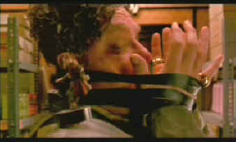

Polygram/1998/186m/ANA,WS 1.85
 |
All tied up. ©Polygram |
John Goodman plays
Ocious Potter, an attorney with nary an honest bone in his body. Goodman, normally a
good-natured screen presence, has plenty of fun making threatening faces and scheming to
do in The Borrowers. But before he can finish them, he's in for plenty of surprises that
include a pretty bad exterminating burn and a cheese bath.
The production design is highly imaginative and it alone is
worth enjoying the DVD. Borrower gadgets are charming. Costumes are entertaining of
themselves. The action is pretty much non-stop. The Borrowers get into lots of trouble and
slip and slide there way out.
There are some scenes on The Borrowers DVD that appear slightly
choppy. It could be from the effect work, but whatever the reason, it's there. The film
has a overpowering orange cast to it. Was it the director's palette or the colorist's lack
of accuracy. I did not see it in the theaters for comparison, so there's no sure way of
knowing. There are also several soft sequences. Overall, the DVD has a homogenized color
look to it, not up to today's typical standard. The Dolby 5:1 is quite active and the bass
emphasizes the pratfalls well.
 ã1998
Stuart J. Kobak , all rights reserved.
ã1998
Stuart J. Kobak , all rights reserved.